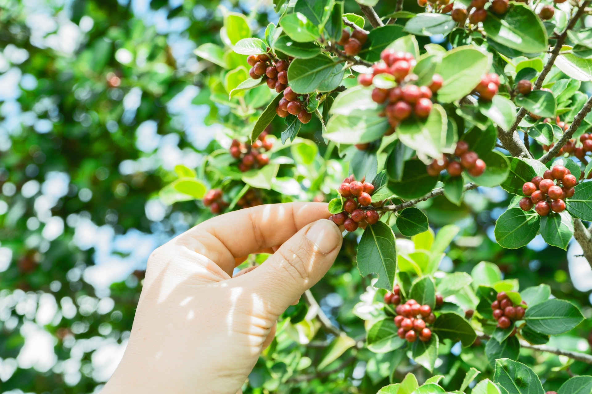
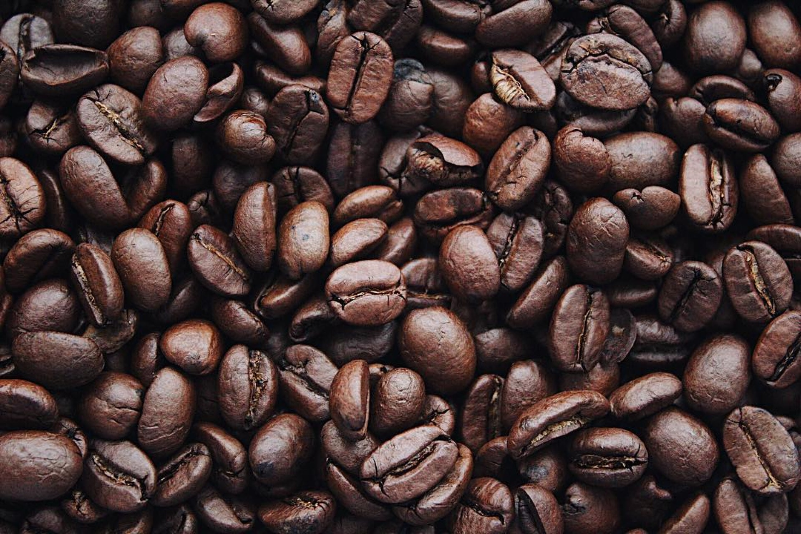

The traditional method of planting coffee is to place 20 seeds in each hole at the beginning of the rainy season. This method loses about 50% of the seeds' potential, as about half fail to sprout. A more effective process of growing coffee,
used in Brazil, is to raise seedlings in nurseries that are then planted outside at six to twelve months. Coffee is often intercropped with food crops, such as corn, beans, or rice during the first few years of cultivation as farmers become
familiar with its requirkements. Coffee plants grow within a defined area between the tropics of Cancer and Capricorn, termed the bean belt or coffee belt
Of the two main species grown, arabica coffee (from C. arabica) is generally more highly regarded than robusta coffee (from C. canephora). Robusta coffee tends to be bitter and have less flavor but better body than arabica. For these reasons,
about three-quarters of coffee cultivated worldwide is C. arabica. Robusta strains also contain about 40–50% more caffeine than arabica. Consequently, this species is used as an inexpensive substitute for arabica in many commercial coffee
blends. Good quality robusta beans are used in traditional Italian espresso blends to provide a full-bodied taste and a better foam head (known as crema).
